+視界 +los mutation
闇はあなたが近づくと逃げ去り、視界と射撃の範囲が広がる(視界+1)が、より遠くから見つかって狙われる可能性もある。
211 個。突然変異は、変異の薬・放射・神などで付いたり消えたりする体の変化で、種族が生まれつき持つものもある。段階のあるものは、段階ごとの説明が並ぶ。
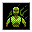
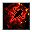
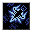
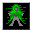
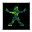
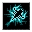
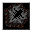
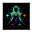
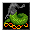
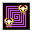
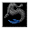
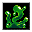
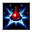
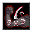
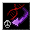
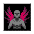
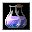
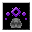
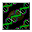
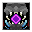
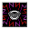
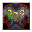
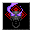
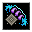
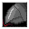
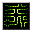
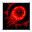
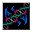
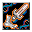
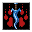
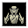

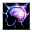
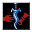
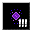
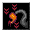
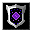
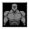
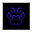
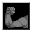
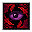

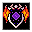
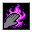
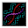


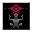
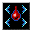
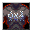
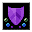
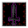
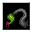
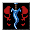